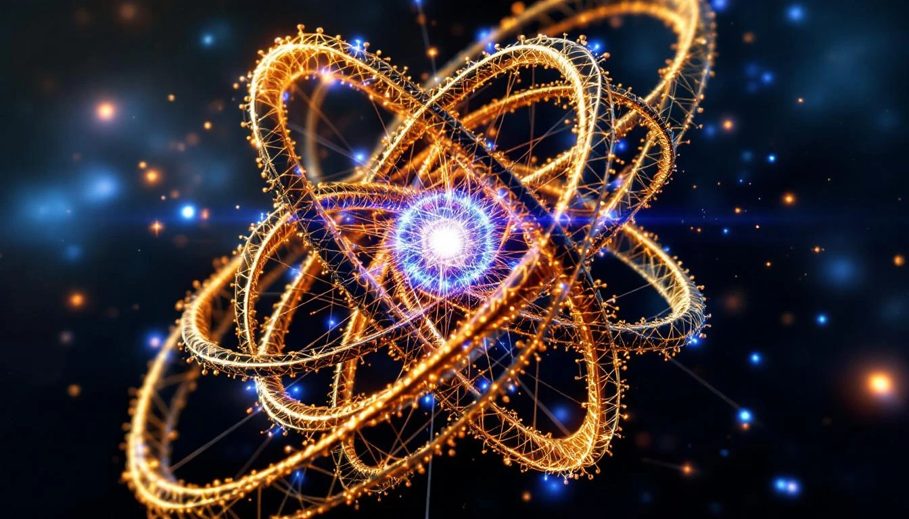

THE FOLD NODE MODEL
Atoms are not "things" floating in empty space. They are fold nodes - points where spacetime folds back on itself, creating stable configurations of charge, mass, and spin.
The nucleus is a tight knot in the fold. Protons and neutrons are not separate particles but aspects of how tightly the fold is wound at the center. The strong nuclear force is simply the tension that holds this knot together.
The Fold Structure
NUCLEUS = Fold Knot
├── Protons: charge nodes (positive fold direction)
├── Neutrons: mass nodes (neutral fold depth)
└── Strong force: knot tension
ELECTRONS = Standing Waves
├── Orbit patterns: fold harmonics
├── Shell structure: 2n² capacity
└── Spin: [1 = -1] duality
WHY ATOMS ARE STABLE
The stability of atoms comes from the balance between:
- Knot tension - holds the nucleus together
- Wave resonance - electrons find stable orbits
- Charge balance - protons and electrons equilibrate
The number 1729 appears in the mass ratio between protons and electrons:
The Mass Ratio
Proton mass / Electron mass = 1836.15...
1836 = 1729 + 107
Where:
1729 = Hardy-Ramanujan number (bridge)
107 = Proton excess (Bohrium's atomic number)
The fold encodes its own fundamental ratio.
Atoms are not things. They are fold geometry made stable.
THE ELECTRON CLOUD
Electrons don't orbit like planets. They exist as standing wave patterns around the nuclear knot. Each shell represents a different harmonic of the fold.
The shell capacity formula 2n² comes directly from fold geometry:
Shell Capacity
Shell n can hold 2n² electrons:
n=1: 2(1)² = 2 electrons
n=2: 2(2)² = 8 electrons
n=3: 2(3)² = 18 electrons
n=4: 2(4)² = 32 electrons
The factor of 2 = [1 = -1] spin states
The n² = spatial configurations in the fold

IMPLICATIONS
If atoms are fold nodes, then:
- Chemistry is fold geometry
- Nuclear physics is knot theory
- Quantum mechanics is wave harmonics
- The periodic table is the catalog of stable fold configurations
The fold makes the atom. The atom makes the world.